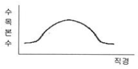
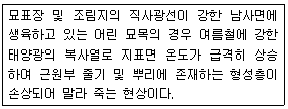
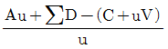
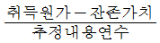
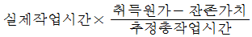
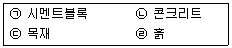
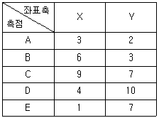
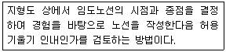

산림기사 (2019-08-04 기출문제)
1과목: 조림학
1. 솎아베기 작업에 대한 설명으로 옳은 것은?
- 잔존목의 수고생장을 크게 촉진한다.
- 최종 생산될 목재의 형질을 개선한다.
- 자연낙지를 유도하여 지하고를 높인다.
- 줄기에 발생하는 부정아를 감소시킨다.
(정답률: 78%)

2. 우리나라 산림대에 대한 설명으로 옳지 않은 것은?
- 연평균 기온에 따라 구분된다.
- 온대림이 차지하는 면적이 가장 넓다.
- 먼구슬나무, 녹나무, 모새나무는 난대림의 특징 수종이다.
- 한라산보다는 설악산에서 난대, 온대, 한대의 수직적 분포가 잘 나타난다.
(정답률: 82%)
3. 윤벌기가 완료되기 전에 짧은 갱신기간 동안 몇 차례 벌채를 실시하여 임목을 완전히 제거하는 작업은?
- 모수작업
- 산벌작업
- 개벌작업
- 택벌작업
(정답률: 71%)
4. 온대 남부지역에서 수하식재가 가장 용이한 수종은?
- 편백
- 소나무
- 오동나무
- 잎본잎갈나무
(정답률: 57%)
5. 인공림 침엽수의 수형목 지정기준으로 옳지 않은 것은?
- 상층 임관에 속할 것
- 수관이 넓고 가지가 굵을 것
- 밑가지들이 말라서 떨어지기 쉽고 그 상처가 잘 아물 것
- 주위 정상목 10본의 평균보다 수고 5%, 직경 20% 이상 클 것
(정답률: 78%)
6. 가지치기를 시행하는 시기로 가장 적합한 것은?
- 11월~2월
- 3월~6월
- 7월~8월
- 9월~10월
(정답률: 83%)
7. 지베렐린에 대한 설명으로 옳지 않은 것은?
- 줄기의 신장 생장을 촉진한다.
- 개화 및 결실을 돕는 역할을 한다.
- 대부분의 지베렐린은 알칼리성이다.
- 벼의 키다리병을 일으키는 것과 관련이 있다.
(정답률: 75%)
8. 꽃의 구조와 종자 및 열매의 구조가 올바르게 연결된 것은?
- 주심 - 배
- 주피 - 종피
- 배주 - 열매
- 씨방 - 종자
(정답률: 82%)
9. 일본에서 도입하여 조림된 수종은?
- Pinus rigida
- Larix kaempferi
- Zelkova serrata
- Quercus acutissima
(정답률: 79%)
10. 종자의 크기가 가장 작은 수종은?
- Alnus japonica
- Pinus koraiensis
- Camellia japonica
- Aesculus turbinata
(정답률: 55%)
11. 수목에서 질소 결핍 증상으로 나타나는 주요 현상은?
- T/R률 증가
- 겨울눈 조기 형성
- 성숙한 잎의 황화 현상
- 모잘록병 발생율 증가
(정답률: 81%)
12. 조림지의 풀베기 작업에 대한 설명으로 옳은 것은?
- 모두베기는 음수를 조림한 지역에서 적합하다.
- 풀베기 작업의 시기는 가을철인 9월에 실시한다.
- 한풍해가 우려되는 조림지에서는 둘레베기가 바람직하다.
- 전나무 조림지에 대한 풀베기 작업은 조림후 2년 이내에 종료한다.
(정답률: 81%)
13. 흙 속에서 공기와 물이 차지하고 있는 부분은?
- 균근
- 비중
- 공극
- 교질
(정답률: 87%)
14. 지존작업에 대한 설명으로 옳은 것은?
- 묘목을 심기 위하여 구덩이를 파는 작업이다.
- 개간한 곳에 조림용 묘목을 식재하는 작업이다.
- 조림지에서 덩굴치기 및 제벌작업을 행하는 것을 뜻한다.
- 조림 예정지에서 잡초, 덩굴식물, 관목 등을 제거하는 작업이다.
(정답률: 81%)
15. 파종상을 만들고 실시하는 경운 작업에 대한 설명으로 옳지 않은 것은?
- 시비의 효과를 고르게 한다.
- 토양이 팽윤해지고 공기와 수분의 유통이 좋아진다.
- 토양의 보수력, 흡열력 및 비료의 흡수력이 증가한다.
- 잡초의 뿌리는 땅속 깊이 묻어주고 잡초의 종자는 땅 위로 노출되게 한다.
(정답률: 84%)
16. 수목의 호흡 작용이 일어나는 세포 내 기관은?
- 핵
- 액포
- 엽록체
- 미토콘드리아
(정답률: 74%)
17. 묘간 거리가 가로 1m, 세로 4m의 장방형 식재시 1ha에 식재되는 묘목 본수는?
- 2500본
- 3000본
- 3333본
- 5000본
(정답률: 85%)
18. 임목의 직경분포가 다음과 같이 나타나는 임형은?

- 동령림
- 택벌림
- 이령림
- 보잔목림
(정답률: 79%)
19. 모수작업에서 모수에 대한 설명으로 옳은 것은?
- 열세목을 대상으로 선발한다.
- 유전적 형질과는 관련이 없다.
- 바람에 대한 저항력이 높아야 한다.
- 종자를 적게 생산하는 개체 중에서 택한다.
(정답률: 82%)
20. 택벌작업의 장점이 아닌 것은?
- 임분의 지력유지에 유리하다.
- 상층목은 채광이 좋아 결실이 잘 된다.
- 면적이 좁은 산림에서 보속 수확이 가능하다.
- 작업 내용이 간단하여 고도의 기술이 필요하지 않다.
(정답률: 84%)
2과목: 산림보호학
21. 씸는 입틀을 가진 해충 방제에 주로 사용되는 살충제 종류는?
- 기피제
- 제충제
- 훈증제
- 소화중독제
(정답률: 84%)
22. 저온으로 인한 수목 피해에 대한 설명으로 옳은 것은?
- 겨울철 생육 휴면기에 내린 서리로 인한 피해를 만상이라 한다.
- 분지 등 저습지에 한기가 밑으로 내려와 머물게 되어 피해를 입는 것을 상렬이라 한다.
- 이른 봄에 수목이 발육을 시작한 후 급격한 온도 저하가 일어나 어린 잎이 손상되는 것을 조상이라 한다.
- 휴면기 동안에는 피해가 적지만 가을 늦게까지 웃자란 도장지나 연약한 맹아지가 주로 피해를 받는다.
(정답률: 63%)
23. 곤충의 날개가 퇴화된 기관으로 주로 파리류에서 볼 수 있는 것은?
- 평균곤
- 딱지날개
- 날개가시
- 날개걸이
(정답률: 68%)
24. 나무주사를 이용한 대추나무 빗자루병 방제 방법으로 옳은 것은?
- 주입 약량은 흉고직경 10cm 기준으로 3L를 사용한다.
- 병 발생이 심한 가지 방향과 반대 방향에도 주사기를 삽입한다.
- 약제 희석 후 변질이 되지 않도록 즉시 약통에 넣고 나무주사한다.
- 물 1L에 옥시테트라사이클린 수화제 10g을 잘 저어서 녹여서 사용한다.
(정답률: 53%)
25. 소나무좀 방제 방법에 대한 설명으로 옳은 것은?
- 11~3월에 아바멕틴 유제를 나무주사한다.
- 수은등이나 유아등을 설치하여 성충을 유진하여 포살한다.
- 먹이나무를 설치하고 산란하도록 한 후 박피하여 소각한다.
- 소나무좀 먹이가 되는 좀벌류, 맵시벌류, 기생파리류를 구제한다.
(정답률: 59%)
26. 복숭아명나방 방제 방법에 대한 설명으로 옳지 않은 것은?
- 수확한 밤을 훈증한 후 저온에 저장한다.
- 곤충병원성미생물인 Bt균이나 다각체 바이러스를 살포한다.
- 밤나무의 경우 7~8월에 페니트로티온 유제등의 약제를 살포한다.
- 성페로몬 트랩을 지상 1.5~2m 되는 가지에 매달아 놓아 성충을 유인 살포한다.
(정답률: 57%)
27. 산불이 발생한 지역에서 많이 발생할 것으로 예측되는 병은?
- 모잘록병
- 리지나뿌리썩음병
- 자줏빛날개무늬병
- 아밀라리아뿌리썩음병
(정답률: 81%)
28. 곤충류 중 가장 많은 종수를 가진 것은?
- 나비목
- 노린재목
- 딱정벌레목
- 총채벌레목
(정답률: 65%)
29. 밤나무 줄기마름병 방제 방법으로 옳지 않은 것은?
- 병에 걸리기 쉬운 단택 및 대보 품종은 식재하지 않는다.
- 천공성 해충류에 의한 피해가 없도록 살충제를 살포한다.
- 동해나 피소로 인한 상처가 나지 않도록 백색 수성페인트를 발라준다.
- 배수가 불량한 곳과 수세가 약한 경우 피해가 심하므로 비배관리를 철저히 해준다.
(정답률: 51%)
30. 아까시잎혹파리가 월동하는 형태는?
- 알
- 유충
- 성충
- 번데기
(정답률: 46%)
31. 뽕나무 오갈병의 병원균을 매개하는 곤충은?
- 말매미충
- 끝동매미충
- 번개매미충
- 마름무늬매미충
(정답률: 84%)
32. 솔잎혹파리 방제 방법에 대한 설명으로 옳지 않은 것은?
- 저항성 품종을 식재한다.
- 천적으로 혹파리살이먹좀벌을 방사한다.
- 5~6월에 아사타미프리드 액제를 나무주사한다.
- 유충이 낙하하는 시기에 카보퓨란 입제를 지면에 살포한다.
(정답률: 48%)
33. 세균에 의해 발생하는 수목병은?
- 소나무 혹병
- 잣나무 털녹병
- 밤나무 뿌리혹병
- 낙엽송 끝마름병
(정답률: 65%)
34. 뿌리혹병 방제 방법으로 옳은 것은?
- 개화기에 석회 보르도액을 살포한다.
- 진딧물류, 매미충류 등 매개층을 구제한다.
- 건전한 모묙을 식재하고 석회 사용량을 늘린다.
- 묘목은 스트렙토마이신 용액을 침지하여 재식한다.
(정답률: 36%)
35. 기생성 식물이 아닌 것은?
- 칡
- 새삼
- 겨우살이
- 오리나무더부살이
(정답률: 69%)
36. 잣나무 털녹병 방제 방법에 대한 설명으로 옳지 않은 것은?
- 수고의 1/3까지의 가지치기는 발병률을 낮추는 효과가 있다.
- 감염된 나무는 녹포자가 비산하기 전에 지속적으로 제거한다.
- 묘포에 담자포자 비산시기인 3월 하순부터 보르도액을 살포한다.
- 중간기주를 5월경부터 제거하기 시작하여 겨울포자가 형성되기 전에 완료한다.
(정답률: 44%)
37. 박쥐나방 방제 방법에 대한 설명으로 옳지 않은 것은?
- 풀깍기를 철저히 시행한다.
- 월동하는 번데기가 붙어 있는 가지를 제거한다.
- 일반 살충제를 혼합한 톱밥을 줄기에 멀칭한다.
- 지저분하게 먹어 들어간 식흔이 발견되면 벌레집을 제거하고 페니트로티온 유제를 주입한다.
(정답률: 53%)
38. 다음 설명에 해당하는 것은?

- 상주
- 한해
- 열사
- 볕데기
(정답률: 60%)
39. 파이토플라즈마에 의한 수목병이 아닌 것은?
- 붉나무 빗자루병
- 벚나무 빗자루병
- 대추나무 빗자루병
- 오동나무 빗자루병
(정답률: 82%)
40. 송이풀과 까치밥나무류를 중간기주로 하는 수목병은?
- 향나무 녹병
- 잣나무 털녹병
- 소나무 잎녹병
- 배나무 붉은별무늬병
(정답률: 74%)
3과목: 임업경영학
41. 자연휴양림 지정을 위한 대상지의 타당성 평가 기준으로 옳지 않은 것은?
- 개발여건 : 개발비용, 토지이용 제한요인 및 재해빈도 등이 적정할 것.
- 생태여건 : 표고차, 임목, 수령, 식물 다양성 및 생육 상태 등이 적정할 것.
- 면적 : 국가 또는 지방자치단체가 조성하는 경우 30만제곱미터 이상일 것.
- 위치 : 접근도로 현황 및 인접도시와 거리 등에 비추어 그 접근성이 용이할 것.
(정답률: 49%)
42. 항속림 사상과 가장 밀접한 관계가 있는 임업경영의 지도원칙은?
- 수익성 원칙
- 공공성 원칙
- 생산성 원칙
- 합자연성 원칙
(정답률: 71%)
43. 복합임업경영의 주요목적으로 가장 적합한 것은?
- 임업 주수입의 증대
- 임업 조수입의 증대
- 임업 경영지의 대단지화
- 임업 수입의 조기화와 다양화
(정답률: 74%)
44. 산림투자에 있어서 미래상황의 불확실성을 투자분석에 포함시킨 것은?
- 회수기간법
- 감응도분석
- 내부수익률법
- 순현재가치법
(정답률: 62%)
45. 생장량에 대한 설명으로 옳지 않은 것은?
- 연년생장량은 총생장량을 수령 또는 임령으로 나눈 양이다.
- 총생장량은 처음에는 점증하다가 증가세가 변곡점에서 최대에 달한다.
- 평균생장량이 최고점에 달한 이후 벌채하지 않고 두는 것은 비효율적이다.
- 정기평균생장량은 일정한 기간의 생장량을 그 기간의 연수로 나눈 값이다.
(정답률: 52%)
46. 기준벌기령 이상에 해당하는 임지에서 수확을 위한 벌채가 아닌 것은?
- 골라베기
- 모두베기
- 솎아베기
- 모수작업
(정답률: 64%)
47. 임지평가 방법에 대한 설명으로 옳지 않은 것은?
- 환원가법은 연년수입의 전가합계로 평가한다.
- 비용가법은 취득원가의 복리합계액으로 평가한다.
- 원가방법은 재조달원가의 전가합계액으로 평가한다.
- 기망가법은 장래에 기대되는 수입의 전가합계로 평가한다.
(정답률: 36%)
48.

의 식이 나타내는 벌기령은? (단, Au: 주벌수확, C: 조림비, u: 벌기령 ∑D: 간벌수확합계, V: 관리비)- 재적수확 최대의 벌기령
- 화폐수익 최대의 벌기령
- 토지순수익 최대의 벌기령
- 산림순수익 최대의 벌기령
(정답률: 50%)
49. 현재 기준연도에서 벌채 예정연도까지의 임목기망가 산출 공식으로 옳은 것은?
- (주벌 및 간벌수확 후가합계)-(지대 및 관리비 후가합계)
- (주벌 및 간벌수확 후가합계)-(지대 및 관리비 전가합계)
- (주벌 및 간벌수확 전가합계)-(지대 및 관리비 후가합계)
- (주벌 및 간벌수확 전가합계)-(지대 및 관리비 전가합계)
(정답률: 65%)
50. 현재 축적이 1,000m3이고 생장률이 연 3%일 때 단리법에 의한 9년 후 축적은?
- 1,030m3
- 1,127m3
- 1,270m3
- 1,304m3
(정답률: 67%)
51. 감가삼각비의 계산방법 중 정액법에 의한 것은?

- (취득원가 - 잔존가치) × 감가율

- (취득원가 - 감가삼각비누계액) × (감가율)
(정답률: 70%)
52. 보속작업에 있어서 하나의 작업급에 속하는 모든 임분을 일순 벌하는데 소요되는 기간은?
- 윤벌령
- 윤벌기
- 벌기령
- 벌채령
(정답률: 74%)
53. 임업경영자산 중 유동자산으로 볼 수 없는 것은?
- 임업 종자
- 임업용 기계
- 미처분 임산물
- 임업생산 자재
(정답률: 77%)
54. 수고 측정에 적합하지 않는 기구는?
- 섹타포크(sector fork)
- 덴드로미터(dendrometer)
- 스피겔리라스코프(spigel relascope)
- 아브네이핸드레블(Abney hand level)
(정답률: 60%)
55. 수간석해에 대한 설명으로 옳지 않은 것은?
- 표준목을 대상으로 실시한다.
- 수간과 직교하도록 원판을 채취한다.
- 흉고를 1.2m로 했을 경우 지상 1.2m를 벌채점으로 한다.
- 수목의 성장과정을 정밀히 사정할 목적으로 측정하는 것이다.
(정답률: 79%)
56. 산림교육활성화를 위하여 산림교육종합계획을 수립ㆍ시행하는 자는?
- 산림청장
- 시ㆍ도지사
- 국유림관리소장
- 농립축산식품부 장관
(정답률: 70%)
57. 정적임분생장모델에 해당하는 것은?
- 수확표
- 산림조사부
- 확률밀도함수
- 누적밀도함수
(정답률: 67%)
58. 임업조수익 중에서 임업소득이 차지하는 비율은?
- 임업의존율
- 임업소득률
- 임업순수익률
- 임업소득가계충족률
(정답률: 63%)
59. 산림경영에서 매년 발생하는 수익이 20만원, 연이율이 5%인 경우에 자본가는?
- 1만원
- 4만원
- 1백만원
- 4백만원
(정답률: 71%)
60. 어떤 밤나무의 말구직경이 14cm이고 재장이 8.5m 일 때 국내산 원목의 재적검량방법에 의한 재적은?
- 0.1308m3
- 0.1667m3
- 0.2176m3
- 0.4352m3
(정답률: 55%)
4과목: 임도공학
61. 임도 노체의 기본구조를 순서대로 나열한 것은?
- 노상→기층→노반→표층
- 노상→노반→기층→표층
- 노상→기층→표층→노반
- 노상→표층→기층→노반
(정답률: 81%)
62. 평판을 한 측점에 고정하고 많은 측점을 시준하여 방향선을 그리고, 거리는 직접 측량하는 방법은?
- 전진법
- 방사법
- 도선법
- 전방교회법
(정답률: 76%)
63. 임도의 횡단면도 작성 방법에 대한 설명으로 옳지 않은 것은?
- 축척은 1/1000로 작성한다.
- 구조물은 별도로 표시한다.
- 횡단기입의 순서는 좌측하단에서 상단방향으로 한다.
- 절토부분은 토사ㆍ암반으로 구분한되, 암반부분은 추정선으로 기입한다.
(정답률: 70%)
64. 지반 조사에 사용하는 방법이 아닌 것은?
- 오거 보링
- 베인 시험
- 케이슨 공법
- 파이프 때려박기
(정답률: 66%)
65. 임도의 평면선형에서 두 측선의 내각이 몇 도 이상되는 장소에 대해서는 곡선을 설치할 필요가 없는가?
- 125°
- 135°
- 145°
- 155°
(정답률: 79%)
66. 임도에서 횡단기울기에 대한 설명으로 옳은 것은?
- 배수의 목적으로 만든다.
- 운전자의 안전한 시야 범위가 확보되도록 만든다.
- 곡선부에서 차량의 주행이 안전하고 쾌적하기 위해 만든다.
- 곡선부에서 차량의 전륜과 후륜사이에 내륜차를 고려하여 만든다.
(정답률: 55%)
67. 수로의 평균유속을 구하는 매닝(Manning)공식에서 수로벽면 재료에 따라 조도계수가 작은 것부터 큰 것의 순서로 올바르게 나열된 것은?

- ㉡-㉢-㉠-㉣
- ㉡-㉢-㉣-㉠
- ㉢-㉡-㉠-㉣
- ㉢-㉡-㉣-㉠
(정답률: 59%)
68. 반출 목재의 길이가 12m이고 임도 유효폭이 3m일 때 최소 곡선 반지름은?
- 6m
- 12m
- 18m
- 24m
(정답률: 63%)
69. 머캐덤도 대한 설명으로 옳지 않은 것은?
- 시멘트 머캐덤도 : 쇄석을 시멘트로 결합시킨 도로
- 역청 머캐덤도 : 쇄석을 타르나 아스팔로 결합시킨 도로
- 교통체 머캐덤도 : 쇄석이 교통과 강우로 인하여 다져진 도로
- 수체 머캐덤도 : 쇄석의 틈 사이에 모래 및 마사를 침투시켜 롤러로 다져진 도로
(정답률: 73%)
70. 흙의 동결로 인한 동상을 가장 받기 쉬운 토질은?
- 실트
- 모래
- 자갈
- 점토
(정답률: 66%)
71. 산림면적이 1000ha인 임지에 간선임도 1000m, 지선임도 15km가 개설되어 있을 때 임도밀도는?
- 1m/ha
- 10m/ha
- 15m/ha
- 16m/ha
(정답률: 55%)
72. 지형의 표시방법 중 자연적 도법에 해당하는 것은?
- 영선법
- 채색법
- 점고선법
- 등고선법
(정답률: 54%)
73. 임도의 유효너비 기준은?
- 배향곡선지의 경우 3.0m 이상
- 간선임도의 경우에는 6.0m 이상
- 길어깨 및 옆도랑을 제외한 3.0m
- 길어깨 및 옆도랑을 포함한 3.0m
(정답률: 76%)
74. 임도 시공장비의 기계정비 산출 시 기계손료에 포함되지 않는 항목은?
- 정비비
- 유류비
- 관리비
- 감가상각비
(정답률: 65%)
75. 임도 설계 과정에서 예측 단계에서 수행하는 것은?
- 임도설계에 필요한 각종 요인을 조사한다.
- 평면측량을 실행하고 종단, 횡단측량을 실행한다.
- 예정노선을 간단한 기구로 측량하여 도면을 작성한다.
- 임시노선에 대하여 현지에 나가서 적정여부를 조사한다.
(정답률: 58%)
76. 임도의 적정 종단기울기를 결정하는 요인으로 거리가 먼 것은?
- 노면 배수를 고려한다.
- 적정한 임도우회율을 설정한다.
- 주행 차량의 회전을 원활하게 한다.
- 주행 차량의 등판력과 속도를 고려한다.
(정답률: 50%)
77. 다각형의 좌표가 다음과 같을 때 면적은? (단, 측점간 거리 단위는 m)

- 33.5m2
- 34.5m2
- 35.5m2
- 36.5m2
(정답률: 45%)
78. 다음 중 정지 및 전압 전용기계가 아닌 것은?
- 탬퍼(tamper)
- 트렌쳐(trencher)
- 모터 그레이더(motor grader)
- 진동 콤펙터(vibrating compactor)
(정답률: 62%)
79. 임도 시공 시 절토면의 침식이나 붕괴를 방지하기 위해서 시설하는 배수구는?
- 암거
- 세월교
- 옆도랑
- 돌림수로
(정답률: 56%)
80. 다음 설명에 해당하는 임도 노선 배치방법은?

- 자유배치법
- 자동배치법
- 선택적배치법
- 양각기 분할법
(정답률: 68%)
5과목: 사방공학
81. 계안으로부터 유심을 향해 돌출한 공작물로 유심의 방향을 변경시켜 계안의 침식이나 붕괴를 방지하기 위해 설치하는 것은?
- 수제
- 밑막이
- 바닥막이
- 기슭막이
(정답률: 77%)
82. 배수로 단면의 윤변이 10m이고 유적이 20m2일 때 경심은?
- 0.2m
- 1m
- 2m
- 10m
(정답률: 76%)
83. 우량계가 유역에 불균등하게 분포되었을 경우에 가장 적정한 평균 강우량 산정방법은?
- 등우선법
- 침투형법
- 산술평균법
- Thiessen법
(정답률: 68%)
84. 투과형 버트리스 사방댐에 대한 설명으로 옳지 않은 것은?
- 측압에 강하다.
- 스크린댐이 가장 일반적인 형식이다.
- 주로 철강제를 이용하여 공사기간을 단축할 수 있다.
- 구조적으로 댐 자리의 폭이 넓고 댐 높이가 낮은 곳에 시공한다.
(정답률: 61%)
85. 선떼붙이기공법에 대한 설명으로 옳은 것은?(오류 신고가 접수된 문제입니다. 반드시 정답과 해설을 확인하시기 바랍니다.)
- 소단폭은 50~70cm로 한다.
- 발 디딤 공간은 50~100cm 이다.
- 선떼붙이기의 기울기는 1:0.5로 한다.
- 단끊기는 직고 2~3m 간격으로 실시한다.
(정답률: 43%)
86. 붕괴형 산사태가 아닌 것은?
- 산붕
- 붕락
- 포락
- 땅밀림
(정답률: 76%)
87. 중력에 의한 침식이 아닌 것은?
- 붕괴형 침식
- 지활형 침식
- 지중형 침식
- 유동형 침식
(정답률: 66%)
88. 돌쌓기 방법에서 금기돌이 아닌 것은?
- 선돌
- 굄돌
- 거울돌
- 포갠돌
(정답률: 71%)
89. 조공 시공 시 소단위 수직높이와 너비 기준을 순서대로 올바르게 나열한 것은?
- 1.0~1.5m, 50~60cm
- 1.0~1.5m, 40~50cm
- 2.0~2.5m, 50~60cm
- 2.0~2.5m, 40~50cm
(정답률: 53%)
90. 경암지역 땅깍기비탈면 안정을 위한 공법으로 가장 적합한 것은?
- 떼붙이기
- 새집붙이기
- 격자틀붙이기
- 종비토뿜어붙이기
(정답률: 47%)
91. 해안사방의 모래언덕 조성 공종에 해당하지 않는 것은?
- 파도막이
- 모래덮기
- 퇴사울세우기
- 정사울세우기
(정답률: 65%)
92. 돌을 쌓아 올릴 때 뒷채움에 콘크리트를 사용하고 줄눈에 모르타르를 사용하는 돌쌓기는?
- 메쌓기
- 막쌓기
- 찰쌓기
- 잡석쌓기
(정답률: 71%)
93. 비탈다듬기나 단끊기 공사로 생긴 토사의 활동을 방지하기 위하여 설치하는 공작물은?
- 단쌓기
- 누구막이
- 땅속흙막이
- 산비탈흙막이
(정답률: 70%)
94. 우리나라 지질계통별 분포 면적과 구성비가 가장 높은 것은?
- 현무암
- 석회암
- 결정편암
- 화강편마암
(정답률: 75%)
95. 골막이에 대한 설명으로 옳지 않은 것은?
- 사방댐과 외견상 모양이 유사하다.
- 대수면과 반수면이 모두 존재한다.
- 계상이 저하될 위험이 있는 곳에 계획한다.
- 돌골막이의 경우 돌쌓기의 기울기는 1:0.3을 표준으로 한다.
(정답률: 75%)
96. 중력식 사방댐의 안정조건으로 거리가 먼 것은?
- 전도에 대한 안정
- 고정에 대한 안정
- 제체파괴에 대한 안정
- 기초지반의 지지력에 대한 안정
(정답률: 68%)
97. 불투과형 중력식 사방댐의 구축재료에 의한 구분 중 내구성이 낮지만 산사태지 등 응급 복구에 가장 적합한 것은?
- 흙댐
- 큰돌댐
- 메쌓기댐
- 돌망태댐
(정답률: 69%)
98. 수로 경사가 30°, 경심이 0.6m, 유속계수가 0.36일 때 Chezy 평균유속에 의한 유속은?
- 약 0.10m/s
- 약 0.21m/s
- 약 0.27m/s
- 약 0.38m/s
(정답률: 44%)
99. 사방사업 대상지 분류에서 황페지의 초기단계에 속하는 것은?
- 땅밀림지
- 임간나지
- 척악임지
- 민둥산지
(정답률: 69%)
100. 산지사방 식재용 수목에 요구되는 조건으로 가장 거리가 먼 것은?
- 양수 수종일 것
- 갱신이 용이할 것
- 생장력이 왕성할 것
- 건조 및 한해에 강한 수종일 것
(정답률: 75%)